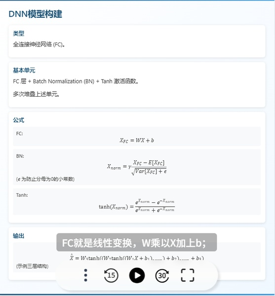

文档图片

AI产品体验报告_image_1.jpeg
AI产品体验报告_image_2.jpeg
AI产品体验报告_image_3.jpeg

AI产品体验报告_image_4.jpeg
语音交互也是它的核心亮点。它支持20+讲解风格，从课堂到讲故事，甚至有奏折模式用文言文给你娓娓道来，打瞌睡了还可以叫爱因斯坦亲自上阵给你提提神。课程中途可以随时打断，说出哪里没听懂，AI会立刻重讲；说举个例子，它会现场编一个生活化案例。它的语速会根据内容自动调整：念数据时放慢，讲逻辑时加快，和真人老师的节奏几乎一致
课程结尾部分的处理也别出心裁。每次学习完之后，秘塔都会附上10道左右习题，当场检测刚学的内容有没有真正掌握。如果答错了，它会给出解释，带领学习者回顾关键点。而且最后它还会顺势推荐一些相关资料，延伸阅读，补全知识网，一不留神就学了几个小时。
AI教育产品找到真正的PMF意味着必须同时解决两个核心问题：如何让用户”学得会”复杂知识，以及如何让他们”坚持学”下去。传统在线教育平台往往陷入要么内容过于浅显、要么学习体验枯燥的困境。
秘塔AI”今天学点啥”在寻找PMF过程中展现了清晰的方法论。它没有做”K12全科辅导““职业技能培训”这种大而全的定位，而是死死盯住文本内容转化这一个场景：将复杂文档转化为易懂课程、提供个性化讲解风格、实现学习过程中的实时互动。这种聚焦带来两个好处：用户认知清晰（我想把文件变成课，就找它）；技术迭代快（所有资源都投入优化NLP对文本的理解）。
首先，在内容转化方式上，“今天学点啥”用”多维度解析”替代传统线性阅读，用户上传的文档会被AI解构为知识图谱，根据逻辑关系重新组织呈现，这种方式显著降低了理解难度。
其次，产品极度强调”个性化适配”而非统一的内容输出。系统提供从”初学者”到”专家”的不同等级知识深度调节，以及20+种讲解风格选择，增加学习乐趣。
更关键的是，秘塔AI建立了持续优化的”学习画像”系统。随着使用次数增加，AI会动态调整讲解方式，比如为偏好案例学习的用户自动补充更多实例，为逻辑型学习者强化知识框架展示。这种自适应能力使产品从工具进化为”学习搭子”。
秘塔AI的PMF验证体现在三个关键指标上：课程完成率（62%，行业平均28%）、讲解风格分享率（“暴躁老哥”风格分享量是其他的3倍）、付费转化率（7日试用后转化率达15%）。这些数据表明产品不仅被需要，而且被喜爱。
产品的增长引擎已经形成闭环：优质内容转化吸引用户→个性化体验提高完成率→特色功能激发分享→口碑带来新用户。随着用户基数扩大，AI的个性化推荐也越发精准，形成正向循环。
秘塔AI的实践表明，AI教育工具的PMF不在于技术有多先进，而在于能否用技术解决学习中最人性的需求——既渴望高效获取知识，又需要情感支持对抗学习孤独。这或许是”今天学点啥”给行业最重要的启示。
总的来说，它就像一个知识广场，没有门槛，有的是各种各样的知识，和各色各样的人。
有很多好奇的念头都曾经在我们的脑海里一闪，但一般情况下，闪完就灭了，再也想不起来了。而秘塔能够保存好奇的火种，再继续点燃它。每次打开“今天学点啥的首页”，总能看到各种领域的内容被推荐出来，比如哲学、心理、健康、自然科学等等，主题跨度很广。就算没有明确的学习目标，也很容易被某个话题吸引，顺势点进去听一课。
博士生在这里聊论文，中学生在这里拆奥数题，退休老人在这里学智能手机——不是所有人都要成为专家，但所有人都该有看懂知识的权利。我越来越意识到意识到，”今天学点啥“的意义之一，就是让普通人更容易接触到原始文献，而不是依赖经过多轮转述的二手信息，在这方面这个AI搭子表现得很出色。
今日AI产品观察
1.Get 笔记
AI 形态：AI 驱动的多模态笔记记录、整理与管理，具备智能问答功能
核心技术：腾讯云 ASR 技术（实现语音转文字、支持多语言及方言识别、可通过热词和自学习定制模型优化识别效果）、接入满血版 DeepSeek-R1（用于 AI 智能搜索和问答）
特点：支持语音、图片、链接、文字等多模态输入方式；能自动整理、分类和归纳笔记，构建个性化知识体系；在语音记录方面，可自动润色、纠错、分段、取标题和生成标签；借助 AI 智能搜索和问答功能，能基于用户笔记内容快速提供准确回答
2. GitHub Copilot (微软/GitHub)
AI形态：代码自动补全
核心技术：OpenAI Codex（GPT-3变体）、代码上下文分析
特点：支持VS Code等主流IDE，根据注释或函数名生成完整代码块，可识别30+编程语言
3.Wysa
AI形态：情绪支持聊天机器人，通过文字/语音对话提供心理干预
核心技术：NLP模型（BERT/GPT变体）分析用户情绪，语音语调分析，关键词触发真人介入，紧急联系人联动
特点：7×24小时匿名情绪支持，临床验证有效（PHQ-9抑郁评分降低35%），HIPAA/GDPR合规隐私保护
AI形态：AI音乐生成
核心技术：音频扩散模型、旋律结构预测
特点：输入文本描述生成完整歌曲（含人声），支持流派/情绪/节拍定制
5.Midjourney (图像生成领域)
AI形态：文生图交互
核心技术：扩散模型（Diffusion）、CLIP语义理解
特点：艺术风格控制精准、社区驱动迭代
AI产品体验报告_image_1.jpeg
AI产品体验报告_image_2.jpeg
AI产品体验报告_image_3.jpeg
AI产品体验报告_image_4.jpeg